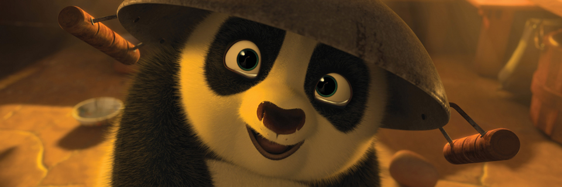

Part of the Animat Habitat™ studio workshop: Character Design for Animation.
Authored by Dane Aleksander.
The Audience
We begin to construct the shapes and colors that help to identify a character in its role in a story, and consider how an audience is likely to react to the character in its context. We see how artistic style can also serve to describe a character, and that a character design echoes the approach that is taken to create it. Line quality, for example: heavy, rounded and soft strokes may suggest a calm quality in a character whereas sharper, rougher lines may be indicative of more erratic behaviour. We focus a character design on a selection of key features that have visual contrast, and that hold visual weight for a select audience.
a/ Kung Fu Panda. (2008) Dreamworks.
The Kung Fu Panda series of films by Dreamworks is the first cartoon feature to see blockbuster success in China. The story is set in ancient China and highlights its culture, mythology and architecture. Chinese audiences have praised its colorful animation, from the martial arts scenes to its depiction of family expectations and how the ancients were believed to pass into the afterlife. Authenticity matters when reaching a targeted demographic, “to make something special you just have to believe it's special, there is no secret ingredient.”

© Dreamworks, Kung Fu Panda 2 (2011) | Po